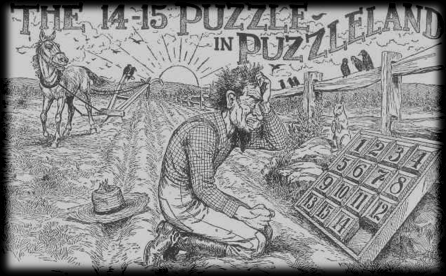

تم إختراع أحجية 14/15 في العام 1880 من قبل نويس بالمر شابمان، موظف بريد أميركي. وصارت هذه الأحجية شائعة بفضل سام لويد، مخترع أحجيات شهير. يجب تنظيم 15 قطعة مربعة بتحريكها ضمن إطار مربع مساحته 16 × 16.
المذهل في الأمر هو أنه لا يمكن تحقيق النظام الصحيح مع كل ترتيب للأرقام. فعلى سبيل المثال، إذا تم التبديل بين القطعتين 14 و15، فيمكن برهنة أنه من المستحيل ترتيب القطع كلياً.
|
 |
دعاية إعلانية أصلية للأحجية.
يُظهر الإعلان ترتيباً أولياً يستحيل حله.